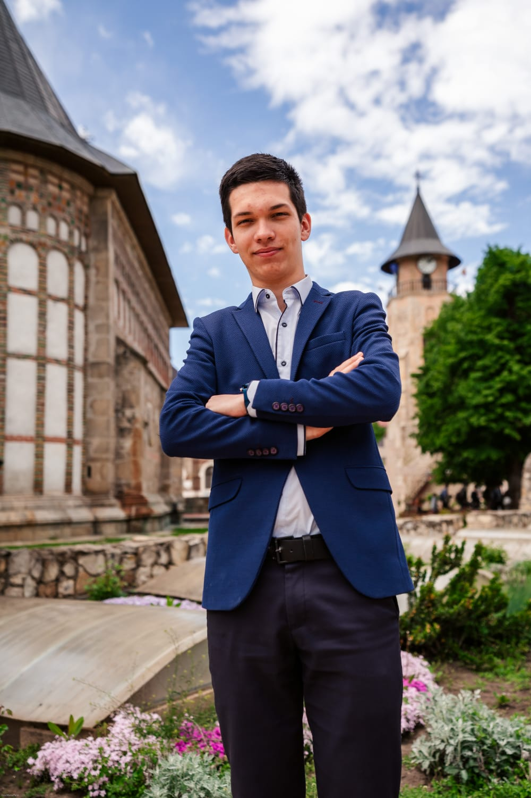

Justinian Pintilie

Summary
I am a 21 years old student in the 3rd year at Faculty of Automatics Control and
Computer Engeneering. I am passionate of coding and I want to become a Full-Stack Developer. :)
Education
Work Experience
I don't have any Work Experience,
but I am determined to learn and
work.
Skills
Programming Skills:
- C/C++ (intermediate)
- OOP (intermediate)
- Kotlin (intermediate)
- Kotlin (intermediate)
- Java (intermediate)
- Verilog (beginner)
- Python (beginner)
- HTML (beginner)
- Matlab (beginner)
Personal Skills:
- Critical Thinking Skills
- Creative Thinking Skills
- Teamwork Skills
- Interpersonal Skills
- Curiosity
Awards and Certifications
Not yet any relevant for work, but I did volunteering. :)
Volunteering
- Volunteer to ASCOR Iasi (Romanian Christian Orthodox
Student Association): 2021 - Current
- Volunteer to ATOR Piatra Neamt (Romanian Orthodox
Youth Association): 2018 - 2021
- Volunteer and Team Leader in Caravana ASCOR Iasi (A Project about
Educational Summer Camps for young people in villages from counties:
Iasi, Neamt, Botosani etc.): 2022 - just volunteer; 2023 - team leader and volunteer.
- Volunteer to TPS - "Taberele din Pridvorul Satului":
organised by ATOR Iasi: Educational and Entertaining Summer Camps for children in
villages from counties: Iasi, Neamt, Botosani etc.) 2017 - 2020; 2022-2023.
About Me
Contact Me
© Justinian Pintilie